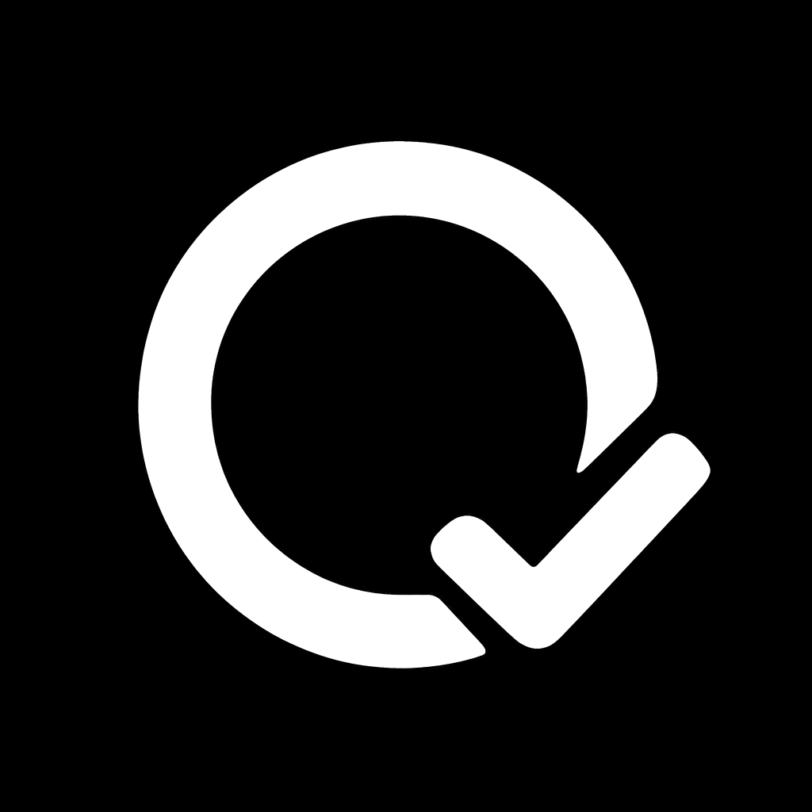

草绿不是装饰，而是时间状态。它从一周轨迹的活跃节点开始，在写入成功时闭合成“印”；即使移除颜色，日期、勾形和文字仍能说明状态。
像一件观察时间与生长的仪器：7 日轨迹贯穿首屏，“今天”是唯一放大的活跃节点，签到后节点闭合。
参照语系：Dieter Rams 的功能克制 × 植物学仪器，而不是常见健康 App。
把每天当作一本持续出版的刊物：巨大日期成为页码，按钮和导航使用切角与硬分隔，彻底摆脱圆角卡片套路。
参照语系：Pentagram / Vignelli 的日历系统，强调版式和秩序。
保留 C 的呼吸时间场与悬浮签到印，以 A 的日期节点底栏承担稳定导航；个性与可用性不再互相牺牲。
视觉语系：Field.io 的运动诗性 × A 方向的生长刻度仪器。

还没有留下今天的印